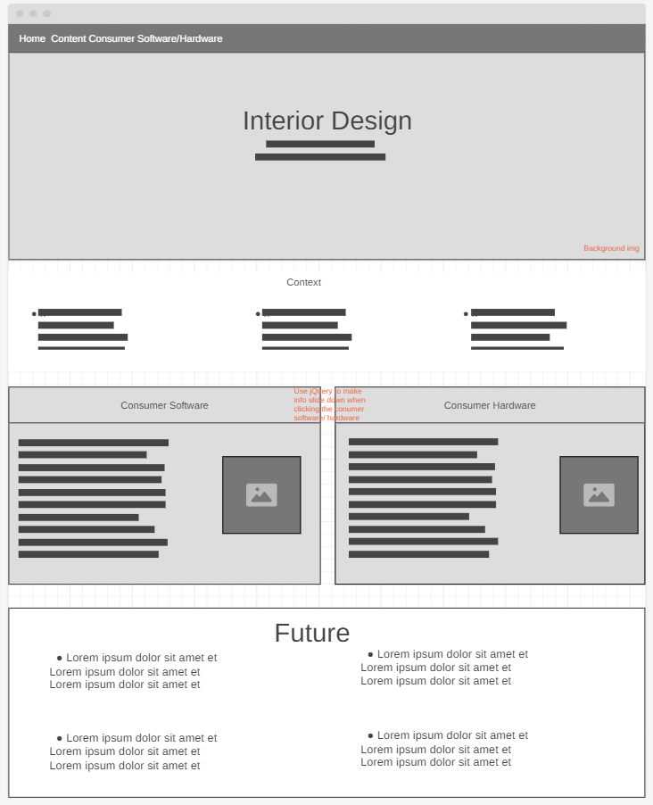

The "Freedom Project" for SEP10 is a year-long project all about making a website that informs the viewer of the current and future innovations in the topic of my choosing. These are the requirements for the project:
For my project, I chose the topic of Interior Design. My website is about existing technologies in interior design. And future technologies like an app that you can design your house an see the price of everything and link you to the websites of the furniture. I used HTML, CSS, Bootstrap, and Github. I also chose to independently study jQuery in order to help me make by website. First, we had to make two wireframes one for mobile view and another for computer view. Then we had to make a plan of what components, colors, and fonts we were using and a timeline of when we are completing each thing. This helped me a lot while working on the MVP by having everything ready and knowing if I needed to catch up. It helped me understand the importance of a plan. I used a navbar, a carousel, containers/grids/ columns, and jQuery to make this website.
While building the websites I encountered many challenges, for example, I couldn't get the carousel to have text inside. I tried many different ways but it couldn't work. Then, I found a carousel with text in W3Schools which helped me build mine.
Another challenge was making the carousel responsive. I solved it by asking Mr. Mueller and finding a website about making the carousel responsive.
I also had trouble getting the animation slide down and up in jQuery to work. I sloved it by understanding that I was not using the same divs id in the jQuery and the body of html.
From this project I learned that time management is very important because while we were doing the MVP during break I was away so I had to find time and try to finish it in class time.
To continue to learn how to make my website better.
Link to the projectThis is my wireframe:
